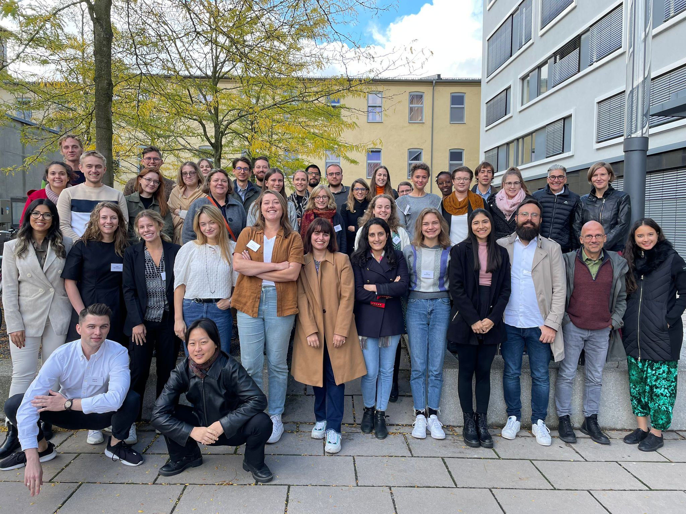
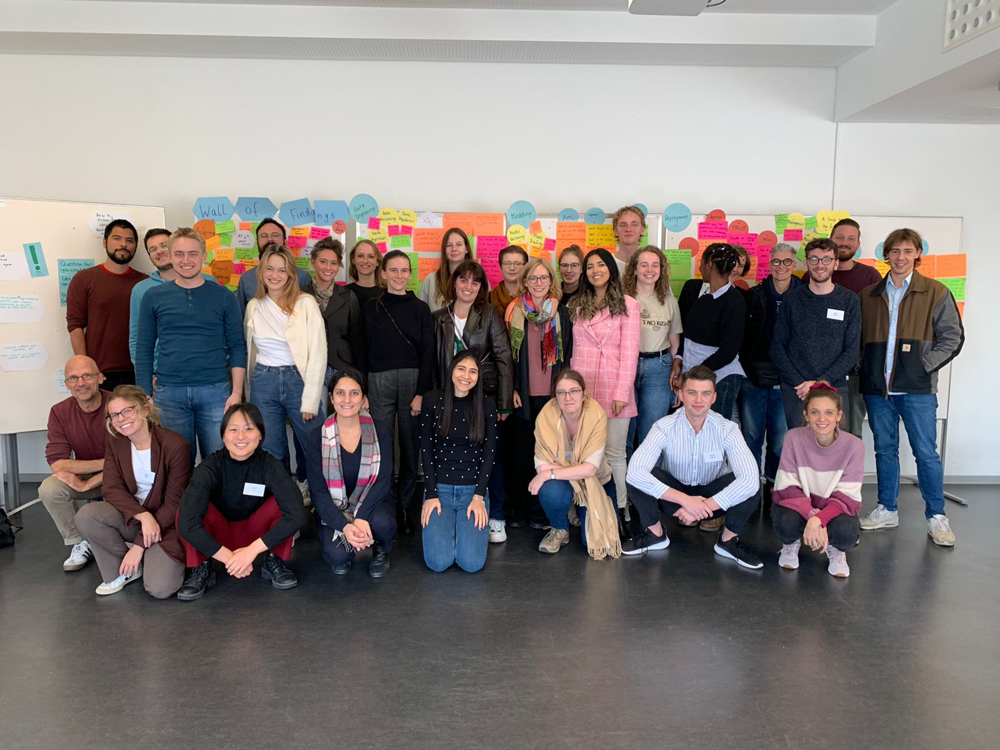

AI &
Ethics, a topic of utmost topicality, was the focus of a summer school
organized by the University of Bamberg in cooperation with the Goethe-Institut.
The course took place at the ERBA building of U Bamberg in the week from
September 26 to 30, 2022. Prof. Christoph Benzmüller
and Prof. Ute Schmid acted as
local organizers, supported by various members of the Faculty of Information
Systems and Applied Computer Science (WIAI) at U Bamberg. Both also contributed
keynote speeches, joining the list of around 30 speakers at the event.
Around 35
highly talented and intrinsically motivated participants, mainly young
professionals and advanced students from all over Europe, were selected from
over 100 applications. Through various lectures, workshops, tutorials and
discussion sessions, participants were able to learn about different aspects
linking AI technology with its ethical implications in areas such as industry,
politics, society, science, decision-making, climate change, to name a few. All
this took place during a full-day programme, followed by social events in the
evening.
Prof. Schmid, the chair for Cognitive Systems at U Bamberg,
dedicated her lecture to the challenge of "Designing Explainable
AI Systems to Reduce Automation Bias and Increase Justified Trust in
AI". She dedicated her talk to the challenge of "designing
explainable AI systems to reduce automation bias and increase
justified trust in AI". Prof. Schmid showed how important it is to make the
reasons for decisions in modern AI systems
understandable. Transparency and keeping humans in the loop is one of
the prerequisites for creating ethical and human-centred AI.
Prof.
Benzmüller, the chair for AI Systems Development at U Bamberg,
gave two lectures. In the first lecture, entitled "What is AI?", he
introduced relevant terms, including the concepts of symbolic and sub-symbolic
AI, and pointed out relevant differences between human and machine
intelligence. In his second talk, entitled "Trusted AI through
Ethico-Legal Governors?", he presented a methodology for developing an
independent, symbolic ethico-legal control layer for AI systems.
The full
programme of the event can be found at https://www.goethe.de/aiethics, and a
participants report on the event has been published in the news section of the
journal KI-Künstliche Intelligenz.
Two group photos
from the event are shown below.

